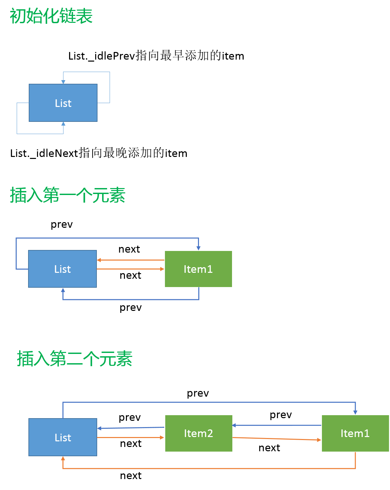

原文连接:https://www.cnblogs.com/dashnowords/p/11078891.html
目录

示例代码托管在：http://www.github.com/dashnowords/blogs
博客园地址：《大史住在大前端》原创博文目录
华为云社区地址：【你要的前端打怪升级指南】
一.概述
Timer模块相关的逻辑较为复杂，不仅包含JavaScript层的实现，也包括C++编写的与底层libuv协作的代码，想要完整地看明白是比较困难的，本章仅以setTimeout这个API的实现机制为主线，讲述源码中的JavaScript相关的实现部分，这部分只需要一些数据结构的基本知识就可以理解。
二. 数据结构
setTimeout这个API的实现基于两类基本数据结构，我们先来复习一下相关的特点。对数据结构知识比较陌生的小伙伴可以参考【野生前端的数据结构基础练习】系列博文自行学习，所有的章节都有示例代码。
2.1 链表
链表是一种物理存储单元上非连续的存储结构，存储元素的逻辑顺序是由链表中的指针链接次序来决定的。每一个节点包含一个存放数据的数据域和存放下一个节点的指针域（双向链表中指针数量为2）。链表在插入元素时的时间复杂度为O(1)（因为只影响插入点前后的节点，无论链表有多大），但是由于空间不连续的特点，访问一个未排序链表的指定节点时就需要逐个对比，时间复杂度为O(n)，比数组结构就要慢一些。链表结构也可以根据指针特点分为单向链表,双向链表和循环链表，Timer模块中使用的链表结构就是双向循环链表,Node.js中源码的底层数据结构实现都是独立的，链表的源码放在lib/internal/linkedlist.js：
'use strict';
function init(list) {
list._idleNext = list;
list._idlePrev = list;
}
// Show the most idle item.
function peek(list) {
if (list._idlePrev === list) return null;
return list._idlePrev;
}
// Remove an item from its list.
function remove(item) {
if (item._idleNext) {
item._idleNext._idlePrev = item._idlePrev;
}
if (item._idlePrev) {
item._idlePrev._idleNext = item._idleNext;
}
item._idleNext = null;
item._idlePrev = null;
}
// Remove an item from its list and place at the end.
function append(list, item) {
if (item._idleNext || item._idlePrev) {
remove(item);
}
// Items are linked with _idleNext -> (older) and _idlePrev -> (newer).
// Note: This linkage (next being older) may seem counter-intuitive at first.
item._idleNext = list._idleNext; //1
item._idlePrev = list;//2
// The list _idleNext points to tail (newest) and _idlePrev to head (oldest).
list._idleNext._idlePrev = item;//3
list._idleNext = item;//4
}
function isEmpty(list) {
return list._idleNext === list;
}链表实例初始化了两个指针，初始时均指向自己，_idlePrev指针将指向链表中最新添加进来的元素，_idleNext指向最新添加进来的元素，实现的两个主要操作为remove和append。链表的remove操作非常简单，只需要将删除项前后的元素指针加以调整，然后将被删除项的指针置空即可，就像从一串锁链中拿掉一节，很形象。
源码中的
idlePrev和idleNext很容易混淆，建议不用强行翻译为“前后”或者“新旧”，（反复记忆N次都记不住我也很无奈），直接按对应位置来记忆就可以了，爱翻译成什么就翻译成什么。
源码中的链表实现并没有提供指定位置插入的方法，append( )方法默认只接收list和item两个参数，新元素会被默认插入在链表的固定位置，这与它的使用方式有关，所以没必要实现完整的链表数据结构。append稍微复杂一些，但是源码中也做了非常详细的注释。首先需要确保插入的元素是独立的（也就是prev和next指针都为null），然后再开始调整，源码中的链表是一个双向循环链表，我们调整一下源码的顺序会更容易理解，其实插入一个元素就是要将各个元素的prev和next两个指针调整到位就可以了。先来看_idlePrev指针链的调整， 也就是指针调整代码中标记为2和3的语句：
item._idlePrev = list;//2
list._idleNext._idlePrev = item;//3这里可以把list看作是一个prev指针连接起来的单向链表，相当于将新元素item按照prev指针的指向添加到list和原本的list._idleNext指向的元素中间，而1和4语句是调整了反方向的next指针链：
item._idleNext = list._idleNext; //1
list._idleNext = item;//4调整后的链表以next指针为依据就可以形成反方向的循环链表，然后只需要记住list._idleNext指针指向的是最新添加的项就可以了。

如上图所示，next和prev分别可以作为链表的逻辑顺序形成循环链。
2.2 二叉堆
源码放在lib/internal/priority_queue.js中，一些博文也直接翻译为优先队列，它们是抽象结构和具体实现之间的关系，特性是一致的。二叉堆是一棵有序的完全二叉树，又以节点与其后裔节点的关系分为最大堆和最小堆。完全二叉树的特点使其可以很容易地转化为一维数组来存储，且不需要二外记录其父子关系，索引为i的节点的左右子节点对应的索引为2i+1和2i+2(当然左右子节点也可能只有一个或都不存在)。Node.js就使用一维数组来模拟最小堆。源码基本上就是这一数据结构和“插入”，“删除”这些基本操作的实现。
堆结构的使用最主要的是为了获得堆顶的元素，因为它总是所有数据里最大或最小的，同时堆结构是一个动态调整的数据结构，插入操作时会将新节点插入到堆底，然后逐层检测和父节点值的相对大小而“上浮”直到整个结构重新变为堆；进行移除操作（移除堆顶元素也是移除操作的一种）时，需要将堆尾元素置换到移除的位置，以维持整个数据结构依然是一棵完全二叉树，然后通过与父节点和子节点进行比较来决定该位置的元素应该“上浮”或“下沉”，并递归这个过程直到整个数据结构被重建为堆。相关的文章非常，本文不再赘述（可以参考这篇博文【二叉堆的添加和删除元素方法】，有动画好理解）。
三. 从setTimeout理解Timer模块源码
timer模块并不需要手动引入，它的源码在/lib/timers.js目录中，我们以这样一段代码来看看setTimeout方法的执行机制：
setTimeout(()=>{console.log(1)},1000);
setTimeout(()=>{console.log(2)},500);
setTimeout(()=>{console.log(3)},1000);3.1 timers.js中的定义
最上层方法的定义进行了一些参数格式化，将除了回调函数和延迟时间以外的其他参数组成数组（应该是用apply来执行callback方法时把这些参数传进去），接着做了三件事，生成timeout实例，激活实例，返回实例。
3.2 Timeout类定义
Timeout类定义在【lib/internal/timers.js】中：
初始化了一些属性，可以看到传入构造函数的callback,after,args都被记录下来，可以看到after的最小值为1ms，Timeout还定义了一些原型方法可以先不用管，然后调用了initAsyncResource( )这个方法，它在实例上添加了[async_id_symbol]和[trigger_async_id_symbol]两个标记后，又调用了emitInit( )方法将这些参数均传了进去，这个emitInit( )方法来自于/lib/internal/async_hooks.js，官方文档对async_hook模块的解释是：
The
async_hooksmodule provides an API to register callbacks tracking the lifetime of asynchronous resources created inside a Node.js application.
它是一个实验性质的API，是为了Node.js内部创建的用于追踪异步资源生命周期的模块，所以推测这部分逻辑和执行机制关系不大，可以先搁在一边。
3.3 active(timeout)
获得了timeout实例后再回到上层函数来，接下来执行的是active(timeout)这个方法，它调用的是insert( item, true, getLibuvNow()),不难猜测最后这个方法就是从底层libuv中获取一个准确的当前时间，insert方法的源码如下：
首先为timeout实例添加了开始执行时间idleStart属性，接下来的逻辑涉及到两个对象，这里提前说明一下：timerListMap是一个哈希表，延时的毫秒数为key，其value是一个双向链表，链表中存放着timeout实例，所以timerListMap就相当于一个按延时时间来分组存放定时器实例的Hash+linkedList结构，另一个重要对象timerListQueue就是上面讲过的优先队列（后文使用“二叉堆”这一概念）。
这里有一个小细节，就是将新的定时器链表加入二叉堆时，比较函数是自定义传入的，在源码中很容易看到
compareTimersLists ( )这个方法使用链表的expiry属性的值进行比较来得到最小堆，由此可以知道，堆顶的链表总是expiry最小的，也就是说堆顶链表的__idlePrev指向的定时器，就是所有定时器里下一个需要触发回调的。
接下来再来看看active( )函数体的具体逻辑，如果有对应键的链表则获取到它（list变量），如果没有则生成一个新的空链表，然后将这个链表添加进二叉堆，跳过中间的步骤，在最后可以看到执行了：
L.append(list, item);这个L实际上是来自于前文提过的linkedList.js中的方法，就是将timeout实例添加到list链表中，来个图就很容易理解了：
中间我们跳过了一点逻辑，就是在新链表生成时执行的:
if(nextExpiry > expiry){
scheduleTimer(msecs);
nextExpiry = expiry;
}nextExpiry是timer模块中维护的一个模块内的相对全局变量，这里的expiry是新链表的下一个定时器的过期时间（也就是新链表中唯一一个timeout实例的过期时间）,这里针对的情况就是新生成的定时器比已存在的所有定时器都要更早触发，这时就需要重新调度一下，并把当前这个定时器的过期时间点设置为nextExpiry时间。
这个scheduleTimer( )使用internalBinding('timers')引入的，在lib/timer.cc中找到这个方法：
void ScheduleTimer(const FunctionCallbackInfo<Value>& args) {
auto env = Environment::GetCurrent(args);
env->ScheduleTimer(args[0]->IntegerValue(env->context()).FromJust());
}再跳到env.cc:
void Environment::ScheduleTimer(int64_t duration_ms) {
if (started_cleanup_) return;
uv_timer_start(timer_handle(), RunTimers, duration_ms, 0);
}可以看到这里就将定时器的信息和libuv的事件循环联系在一起了，libuv还没有研究，所以这条逻辑线暂时到此为止。再回到之前的示例，当三个定时器都添加完成后，内存中的对象关系基本是下面的样子：

3.4 定时器的处理执行逻辑
至此我们已经将定时器的信息都存放好了，那么它是如何被触发的呢？我们找到node.js的启动文件lib/internal/bootstrap/node.js284-290行，可以看到，在启动函数中，Node.js通过调用setTimers( )方法将定时器处理函数processTimers传递给了底层，它最终会被用来调度执行定时器，processTimers方法由lib/internal/timers.js中提供的getTimerCallbacks(runNextTicks) 方法运行得到，所以聚焦到/lib/internal/timers.js中：
推测libuv每次需要检查是否有定时器到期时都会运行processTimers( )方法，来看一下对应的逻辑，一个无限循环的while语句，直到二叉堆的堆顶没有任何定时器时跳出循环并返回0。在循环体内部，会用堆顶元素的过期时间和当前时间相比，如果list.expiry更大，说明时机未到还不需要执行，把它的过期时间赋值给nextExpiry然后返回（返回逻辑先不细究）。如果逻辑执行到471行，说明堆顶元素的过期时间已经过了，ranAtLeastOneList这个标记位使得这段逻辑按照如下方式运行：
1.获取到一个expiry已经过期的链表,首次向下执行时`ranAtLeastOneList`为false，则将其置为true，然后执行`listOnTimeout()`这个方法;
2.然后继续取堆顶的链表，如果也过期了，再次执行时，会先执行`runNextTicks()`，再执行`listOnTimeout()`。我们按照逻辑顺序，先来看看listOnTimeout( )这个方法，它有近100行（我们以上面3个定时器的实例来看看它的执行逻辑）：
function listOnTimeout(list, now) {
const msecs = list.msecs; //500 , 500ms的链表在堆顶
debug('timeout callback %d', msecs);
var diff, timer;
let ranAtLeastOneTimer = false;
while (timer = L.peek(list)) { //取链表_idlePrev指向的定时器，也就是链表中最先到期的
diff = now - timer._idleStart; //计算当前时间和它开始计时那个时间点的时间差，
// Check if this loop iteration is too early for the next timer.
// This happens if there are more timers scheduled for later in the list.
// 原文翻译：检测当前事件循环对于下一个定时器是否过早，这种情况会在链表中还有其他定时器时发生。
// 人话翻译：就是当前的时间点只需要触发链表中第一个500ms定时器，下一个500ms定时器还没到触发时间。
// 极端的相反情况就是由于阻塞时间已经过去很久了，链表里的N个定时器全都过期了，都得执行。
if (diff < msecs) {
//更新链表中下一个到期定时器的时间记录，计算逻辑稍微有点绕
list.expiry = Math.max(timer._idleStart + msecs, now + 1);
list.id = timerListId++;
timerListQueue.percolateDown(1);//堆顶元素值发生更新，需要通过“下沉”来重构“堆”
debug('%d list wait because diff is %d', msecs, diff);
return; //直接结束了
}
//是不是貌似见过这段，先放着等会一块说
if (ranAtLeastOneTimer)
runNextTicks();
else
ranAtLeastOneTimer = true;
// The actual logic for when a timeout happens.
L.remove(timer);
const asyncId = timer[async_id_symbol];
if (!timer._onTimeout) {
if (timer[kRefed])
refCount--;
timer[kRefed] = null;
if (destroyHooksExist() && !timer._destroyed) {
emitDestroy(asyncId);
timer._destroyed = true;
}
continue;
}
emitBefore(asyncId, timer[trigger_async_id_symbol]);
let start;
if (timer._repeat) //这部分看起来应该是interval的逻辑，interval底层实际上就是一个重复的timeout
start = getLibuvNow();
try {
const args = timer._timerArgs;
if (args === undefined)
timer._onTimeout(); //设置定时器时传入的回调函数被执行了
else
timer._onTimeout(...args);
} finally {
if (timer._repeat && timer._idleTimeout !== -1) {
timer._idleTimeout = timer._repeat;
if (start === undefined)
start = getLibuvNow();
insert(timer, timer[kRefed], start);//interval的真实执行逻辑，重新获取时间然后插入到链表中
} else if (!timer._idleNext && !timer._idlePrev) {
if (timer[kRefed])
refCount--;
timer[kRefed] = null;
if (destroyHooksExist() && !timer._destroyed) {
emitDestroy(timer[async_id_symbol]);
timer._destroyed = true;
}
}
}
emitAfter(asyncId);
}
//这块需要注意的是，上面整个逻辑都包在while(timer = L.peek(list)){...}里面
// If `L.peek(list)` returned nothing, the list was either empty or we have
// called all of the timer timeouts.
// As such, we can remove the list from the object map and
// the PriorityQueue.
debug('%d list empty', msecs);
// The current list may have been removed and recreated since the reference
// to `list` was created. Make sure they're the same instance of the list
// before destroying.
// 原文翻译：当前的list标识符所引用的list有可能已经经过了重建，删除前需要确保它指向哈希表中的同一个实例。
if (list === timerListMap[msecs]) {
delete timerListMap[msecs];
timerListQueue.shift();
}
}3.5 实例分析
代码逻辑因为包含了很多条件分支，所以不容易理解，我们以前文的实例作为线索来看看定时器触发时的执行逻辑：

程序启动后，processTimer( )方法不断执行，第一个过期的定时器会在堆顶的500ms定时器链表（下面称为500链表）中产生，过期时间戳为511。
假设时间戳到达600时程序再次执行processTimer( )，此时发现当前时间已经超过nextExpiry记录的时间戳511，于是继续向下执行进入listOnTimeout(list, now)，这里的list就是哈希表中键为500的链表，now就是当前时间600，进入listOnTimeout方法后，获取到链表中最早的一个定时器timer,然后计算diff参数为600-11=589, 589 > 500， 于是绕过条件分支语句，ranAtLeastOneTimer为false也跳过（跳过后其值为true），接下来的逻辑从链表中删除了这个timer，然后执行timer._onTimeout指向的回调函数，500链表只有一个定时器，所以下一循环时L.peek(list)返回null，循环语句跳出，继续向后执行。此时list依然指向500链表，于是执行删除逻辑，从哈希表和二叉堆中均移除500链表，两个数据结构在底层会进行自调整。
processTimer( )再次执行时，堆顶的链表变成了1000ms定时器链表（下面称为1000链表），nextExpiry赋值为list.expiry，也就是1001，表示1000ms定时器链表中下一个到期的定时器会在时间戳超过1001时过期，但时间还没有到。下面分两种情况来分析：
1.时间戳为1010时执行processTimer( )
时间来到1010点，processTimer( )被执行，当前时间1010大于nextExpiry=1001，于是从堆顶获取到1000链表，进入listOnTimeout( )，第一轮while循环执行时的情形和500链表执行时是一致的，在第二轮循环中，timer指向1000链表中后添加的那个定时器，diff的值为 1010 - 21 = 989,989 < 1000 ,所以进入if(diff < msecs)的条件分支，list.expiry调整为下一个timer的过期时间1021，然后通过下沉来重建二叉堆（堆顶元素的expiry发生了变化），上面的实例中只剩了唯一一个链表，所以下沉操作没有引发什么实质影响，接着退出当前函数回到processTimer的循环体中，接着processTimer里的while循环继续执行，再次检查栈顶元素，时间还没到，然后退出，等时间超过下一个过期时间1021后，最后一个定时器被触发，过程基本一致，只是链表耗尽后会触发listOnTimeout后面的清除哈希表和二叉堆中相关记录的逻辑。
总结一下，链表的消耗逻辑是，从链表中不断取出peek位置的定时器，如果过期了就执行，如果取到一个没过期的，说明链表里后续的都没过期，就修改链表上的
list.expiry属性然后退回到processTimer的循环体里，如果链表耗尽了，就将它从哈希表和二叉堆中把这个链表删掉。
2.时间戳为1050时执行processTimer( )
假如程序因为其他原因直到时间为1050时才开始检查1000链表，此时它的两个定时器都过期了需要被触发，listOnTimeout( )中的循环语句执行第一轮时是一样的，第二次循环执行时，跳过if(diff < msecs)的分支，然后由于ranAtLeastOneTimer标记位的变化，除了第一个定时器的回调外，其他都会先执行runNextTicks( )然后再执行定时器上绑的回调，等到链表耗尽后，进入后续的清除逻辑。
我们再来看一种更极端的情况，假如程序一直阻塞到时间戳为2000时才执行到processTimer(此时3个定时器都过期了，2个延迟1000ms，1个延迟500ms，堆顶为500ms链表)，此时processTimer( )先进入第一次循环，处理500链表，然后500链表中唯一的定时器处理完后，逻辑回到processTimer的循环体，再进行第二轮循环，此时获取到堆顶的1000链表，发现仍然需要执行，那么就会先执行runNextTicks( )，然后在处理1000链表，后面的逻辑就和上面时间戳为1050时执行processTimer基本一致了。
至此定时器的常规逻辑已经解析完了，还有两个细节需要提一下，首先是runNextTicks( )，从名字可以推测它应该是执行通过process.nextTick( )添加的函数，从这里的实现逻辑来看，当有多个定时器需要触发时，每个间隙都会去消耗nextTicks队列中的待执行函数，以保证它可以起到“尽可能早地执行”的职责，对此不了解的读者可以参考上一篇博文【译】Node.js中的事件循环，定时器和process.nextTick。
四. 小结
timer模块比较大，在了解基本数据结构的前提下不算特别难理解，setImmediate( )和process.nextTick( )的实现感兴趣的读者可以自行学习，想要对事件循环机制有更深入的理解，需要学习C++和libuv的相关原理，笔者尚未深入涉猎，以后有机会再写。